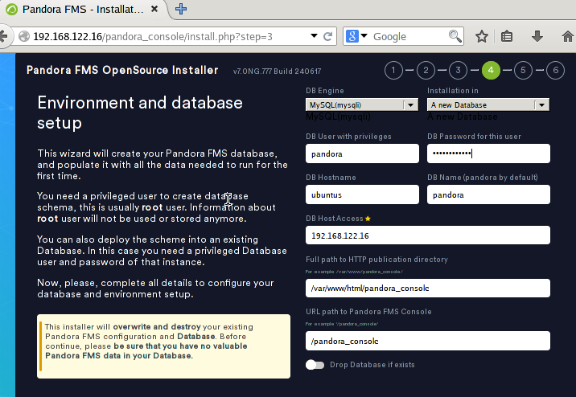

Projecte Final: Monitorización de Red y Servicios con Pandora FMS en GNS3
Estructura del Escenario en GNS3
Dispositivos y Red
- NAT: Conectat a Internet i al servidor DHCP.
- Ubuntu Server (Servidor DHCP):
-
Monitorizar cin el Pandora FMS
-
Routers
- Cisco
- Asignar direcciones IP:
- Xarxa 1:
192.168.10.0/24(primer switch). - Mikrotik
- Asignar direcciones IP:
-
Xarxa 2:
172.16.10.0/24(segon switch). -
Switch 1:
- Dispositivos conectados:
- Firefox (IP asignada por DHCP).
- VPC (IP asignada por DHCP).
- Ubuntu Desktop (IP reservada:
192.168.10.50, servidor web). -
Windows 10 (IP reservada:
192.168.10.60, servicio de archivos). -
Switch 2:
- Dispositivos conectados:
- Firefox (IP asignada por DHCP).
- VPC (IP asignada por DHCP).
- Ubuntu Desktop (IP reservada:
172.16.10.50, servidor MySQL). - Windows 10 (IP reservada:
172.16.10.60, servicio de archivos).
Configuración del Ubuntu Server
Configuración del netplan
sudo nano /etc/netplan/50-cloud-init.yaml
sudo netplan apply
Configuración de Pandora FMS
- Instalación de depenencias:
- apache2
- mariaDB
- php
sudo apt install apache2 mariadb-server mariadb-client php
- Configuración de mariaDB
Hay que tener en cuenta que vamos a acceder desde una máquina diferente al server,por lo que tenenmos que editar el archivo de configuración
Buscaremos la linea de bind-address y le pondremos 0.0.0.0
sudo nano /etc/mysql/mariadb.conf.d/50-server.cnf
bind-address: 0.0.0.0
- Creación de la base de datos y el usuario
Vamos a crear la base de datos y el usuario con el cuál accederemos desde el cliente
sudo mysql -u root -p
CREATE DATABASE pandora;
CREATE USER 'pandora'@'%' IDENTIFIED BY 'tu_password_segura';
GRANT ALL PRIVILEGES ON pandora.* TO 'pandora'@'%';
FLUSH PRIVILEGES;
EXIT;
- Descarga e instalación de Pandora FMS
Para ello he clonado el repositorio que github de pandora y dado permisos a este
git clone https://github.com/pandorafms/pandorafms.git
sudo mv pandorafms/pandora_console /var/www/html/pandora_console
sudo chown -R www-data:www-data /var/www/html/pandora_console
sudo chmod -R 755 /var/www/html/pandora_console
- Configuración de Apache
Para ello creamos y editamos el archivo de configuración y lo habilitamos
sudo cp 000-default.conf pandora.conf
sudo nano pandora.conf
sudo a2ensite pandira.conf
sudo systemctl reload apache2
sudo systemctl restart apache2
sudo systemctl status apache2
- Finalizar instalacion en el navegador
Una vez hecha la instalación y configuración de apache, podremos acceder a través de un navegador buscando lo siguiente:
http://192.168.122.16/pandora_console
Teniendo en cuenta que la dirección 192.168.122.16 es la ip del servidor y pandora_console la carpeta que hemos movido a /var/www/html

Una vez dentro simplemente seguimos los pasos de la instalación, nos indicará si hay alguna dependencia que no esté instalada.

Y nos preguntará acerca de los datos de la base de datos.

Cuando encuentre la base de datos se instalará


Al volver al servidor y entrar en la carpeta de pandora_console veremos el archivo install.php que se ha creado con la instalación, este habrá que eliminarlo
cd /var/www/html/pandora_console
sudo rm install.php

- Instalación y configuración del serrvidor de Pandora FMS